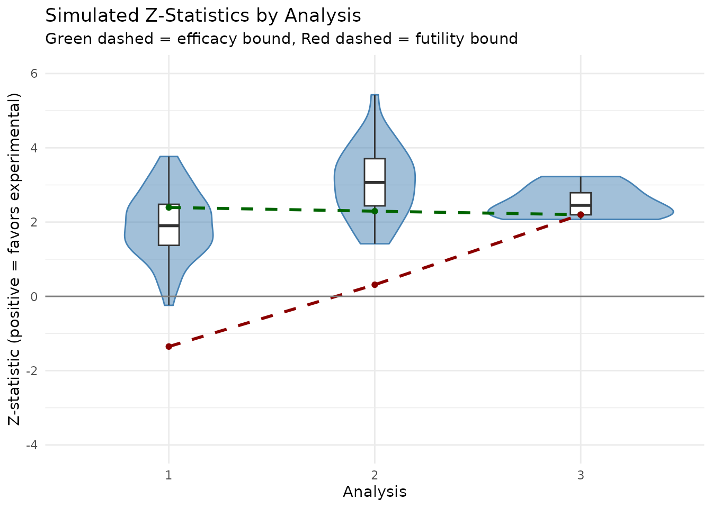

Group Sequential Design Simulation
group_sequential_simulation.RmdThis vignette demonstrates how to create and simulate a group
sequential design for negative binomial outcomes using
gsNBCalendar().
Trial Design Parameters
We design a trial with the following characteristics:
- Enrollment: 1 year (12 months) with a constant rate
- Trial Duration: 2 years (24 months)
-
Analyses:
- Interim 1: 10 months
- Interim 2: 18 months
- Final: 24 months
-
Event Rates:
Control: 1.5 events per year
Experimental: 1.0 events per year (rate ratio = 0.67)
- Dispersion: 0.5
- Power: 90% (beta = 0.1)
- Alpha: 0.025 (one-sided)
Sample Size Calculation
First, we calculate the required sample size for a fixed design:
# Sample size calculation
# Enrollment: constant rate over 1 year
# Trial duration: 2 years
nb_ss <- sample_size_nbinom(
lambda1 = 1.5, # Control event rate (per year)
lambda2 = 1.0, # Experimental event rate (per year)
dispersion = 0.5, # Overdispersion parameter
power = 0.9, # 90% power
alpha = 0.025, # One-sided alpha
accrual_rate = 100, # Patients per year (will determine total n)
accrual_duration = 1, # 1 year enrollment
trial_duration = 2 # 2 year trial
)
# Print key results
cat("Fixed Design Sample Size:\n")
#> Fixed Design Sample Size:
cat(" Control (n1):", ceiling(nb_ss$n1), "\n")
#> Control (n1): 135
cat(" Experimental (n2):", ceiling(nb_ss$n2), "\n")
#> Experimental (n2): 135
cat(" Total:", ceiling(nb_ss$n_total), "\n")
#> Total: 270
cat(" Average exposure:", round(nb_ss$exposure, 3), "years\n")
#> Average exposure: 1.5 yearsGroup Sequential Design
Now we create a group sequential design with 3 analyses. We use the
usTime parameter to specify spending based on calendar time
fractions:
- 10/24 ≈ 0.417 at interim 1
- 18/24 = 0.75 at interim 2
- 24/24 = 1.0 at final
However, the user specified usTime = c(0.1, 0.2, 1)
which provides more conservative early spending.
# Analysis times (in years, for simulation)
analysis_times <- c(10, 18, 24) / 12 # Convert months to years
# Information fractions (approximate, based on expected exposure)
# At 10 months: ~100 patients enrolled, avg follow-up ~5/12 years
# At 18 months: 100 patients enrolled, avg follow-up ~13/12 years
# At 24 months: 100 patients enrolled, avg follow-up ~1.5 years (final exposure)
# These are approximations; actual info depends on enrolled patients and events
# For timing, we use calendar time fractions
timing <- analysis_times / max(analysis_times)
# Create group sequential design
gs_nb <- gsNBCalendar(
x = nb_ss,
k = 3,
test.type = 4, # Two-sided asymmetric, non-binding futility
timing = timing,
usTime = c(0.1, 0.2, 1), # Conservative efficacy spending
lsTime = NULL # Futility spending based on information time
)
# Display design bounds
cat("\nGroup Sequential Design Boundaries:\n")
#>
#> Group Sequential Design Boundaries:
cat("\nAnalysis Info Frac Z Upper Z Lower\n")
#>
#> Analysis Info Frac Z Upper Z Lower
for (i in 1:3) {
cat(sprintf(" %d %.3f %.3f %.3f\n",
i, gs_nb$timing[i], gs_nb$upper$bound[i], gs_nb$lower$bound[i]))
}
#> 1 0.417 3.504 0.114
#> 2 0.750 3.360 1.208
#> 3 1.000 1.961 1.961
# Print the gsDesign object for full details
print(gs_nb)
#> Asymmetric two-sided group sequential design with
#> 90 % power and 2.5 % Type I Error.
#> Upper bound spending computations assume
#> trial continues if lower bound is crossed.
#>
#> Sample
#> Size ----Lower bounds---- ----Upper bounds-----
#> Analysis Ratio* Z Nominal p Spend+ Z Nominal p Spend++
#> 1 0.444 0.11 0.5454 0.0204 3.50 0.0002 0.0002
#> 2 0.799 1.21 0.8865 0.0341 3.36 0.0004 0.0003
#> 3 1.066 1.96 0.9751 0.0455 1.96 0.0249 0.0244
#> Total 0.1000 0.0250
#> + lower bound beta spending (under H1):
#> Hwang-Shih-DeCani spending function with gamma = -2.
#> ++ alpha spending:
#> Hwang-Shih-DeCani spending function with gamma = -4.
#> * Sample size ratio compared to fixed design with no interim
#>
#> Boundary crossing probabilities and expected sample size
#> assume any cross stops the trial
#>
#> Upper boundary (power or Type I Error)
#> Analysis
#> Theta 1 2 3 Total E{N}
#> 0.0000 0.0002 0.0003 0.0220 0.0225 0.6340
#> 3.2415 0.0896 0.2425 0.5679 0.9000 0.9239
#>
#> Lower boundary (futility or Type II Error)
#> Analysis
#> Theta 1 2 3 Total
#> 0.0000 0.5454 0.3475 0.0846 0.9775
#> 3.2415 0.0204 0.0341 0.0455 0.1000Simulation Study
We now simulate 50 trials to evaluate the operating characteristics of the group sequential design.
Simulation Setup
set.seed(42)
n_sims <- 50
# Enrollment rate (patients per year) to achieve target sample size
n_target <- ceiling(nb_ss$n_total)
enroll_rate_val <- n_target / 1 # All enrolled in 1 year
# Define enrollment
enroll_rate <- data.frame(
rate = enroll_rate_val,
duration = 1 # 1 year enrollment
)
# Define failure rates (with dispersion)
fail_rate <- data.frame(
treatment = c("Control", "Experimental"),
rate = c(1.5, 1.0),
dispersion = c(0.5, 0.5)
)
# No dropout for simplicity
dropout_rate <- NULL
# Maximum follow-up (trial duration minus minimum enrollment time)
max_followup <- 2 # 2 years from enrollment startRun Simulations
# Storage for results
results <- vector("list", n_sims)
for (sim in 1:n_sims) {
# Simulate trial data
sim_data <- nb_sim(
enroll_rate = enroll_rate,
fail_rate = fail_rate,
dropout_rate = dropout_rate,
max_followup = max_followup,
n = n_target
)
# Analyze at each interim
sim_results <- data.frame(
sim = sim,
analysis = 1:3,
analysis_time = analysis_times,
n_enrolled = NA_integer_,
events_ctrl = NA_integer_,
events_exp = NA_integer_,
events_total = NA_integer_,
exposure_ctrl = NA_real_,
exposure_exp = NA_real_,
z_stat = NA_real_,
p_value = NA_real_,
cross_upper = NA,
cross_lower = NA
)
stopped <- FALSE
for (k in 1:3) {
if (stopped) {
# Trial already stopped at earlier analysis
sim_results$cross_upper[k] <- FALSE
sim_results$cross_lower[k] <- FALSE
next
}
# Cut data at analysis time
cut_time <- analysis_times[k]
cut_data <- cut_data_by_date(sim_data, cut_date = cut_time)
# Count enrolled subjects (those with enroll_time <= cut_time)
enrolled <- unique(sim_data$id[sim_data$enroll_time <= cut_time])
cut_data <- cut_data[cut_data$id %in% enrolled, ]
# Summary by treatment
summary_dt <- as.data.table(cut_data)[
,
.(n = .N, events = sum(events), exposure = sum(tte)),
by = treatment
]
ctrl_row <- summary_dt[treatment == "Control"]
exp_row <- summary_dt[treatment == "Experimental"]
sim_results$n_enrolled[k] <- nrow(cut_data)
sim_results$events_ctrl[k] <- if (nrow(ctrl_row) > 0) ctrl_row$events else 0
sim_results$events_exp[k] <- if (nrow(exp_row) > 0) exp_row$events else 0
sim_results$events_total[k] <- sim_results$events_ctrl[k] + sim_results$events_exp[k]
sim_results$exposure_ctrl[k] <- if (nrow(ctrl_row) > 0) ctrl_row$exposure else 0
sim_results$exposure_exp[k] <- if (nrow(exp_row) > 0) exp_row$exposure else 0
# Run Mütze test
if (nrow(cut_data) >= 4 && sim_results$events_total[k] >= 2) {
test_result <- tryCatch(
mutze_test(cut_data),
error = function(e) NULL
)
if (!is.null(test_result)) {
sim_results$z_stat[k] <- test_result$z
sim_results$p_value[k] <- test_result$p_value
# Check boundaries (one-sided: reject if z < -upper bound for benefit)
# For rate ratio < 1 (experimental better), log(RR) < 0, so z < 0
z_eff <- -test_result$z # Flip sign for efficacy direction
sim_results$cross_upper[k] <- z_eff > gs_nb$upper$bound[k]
sim_results$cross_lower[k] <- z_eff < gs_nb$lower$bound[k]
if (sim_results$cross_upper[k] || sim_results$cross_lower[k]) {
stopped <- TRUE
}
}
}
}
results[[sim]] <- sim_results
}
# Combine all results
all_results <- do.call(rbind, results)Results Summary
Events and Exposure by Analysis
# Summarize by analysis
summary_by_analysis <- as.data.table(all_results)[
,
.(
mean_enrolled = mean(n_enrolled, na.rm = TRUE),
mean_events_total = mean(events_total, na.rm = TRUE),
mean_events_ctrl = mean(events_ctrl, na.rm = TRUE),
mean_events_exp = mean(events_exp, na.rm = TRUE),
mean_exposure_ctrl = mean(exposure_ctrl, na.rm = TRUE),
mean_exposure_exp = mean(exposure_exp, na.rm = TRUE),
mean_z = mean(z_stat, na.rm = TRUE),
sd_z = sd(z_stat, na.rm = TRUE)
),
by = .(analysis, analysis_time)
]
summary_by_analysis |>
gt() |>
tab_header(title = "Summary Statistics by Analysis") |>
cols_label(
analysis = "Analysis",
analysis_time = "Time (yrs)",
mean_enrolled = "N Enrolled",
mean_events_total = "Total Events",
mean_events_ctrl = "Ctrl Events",
mean_events_exp = "Exp Events",
mean_exposure_ctrl = "Ctrl Exposure",
mean_exposure_exp = "Exp Exposure",
mean_z = "Mean Z",
sd_z = "SD Z"
) |>
fmt_number(decimals = 2)| Summary Statistics by Analysis | |||||||||
| Analysis | Time (yrs) | N Enrolled | Total Events | Ctrl Events | Exp Events | Ctrl Exposure | Exp Exposure | Mean Z | SD Z |
|---|---|---|---|---|---|---|---|---|---|
| 1.00 | 0.83 | 226.24 | 116.24 | 68.72 | 47.52 | 45.85 | 46.14 | −1.77 | 1.07 |
| 2.00 | 1.50 | 270.00 | 331.27 | 196.80 | 134.47 | 132.20 | 132.93 | −2.76 | 0.96 |
| 3.00 | 2.00 | 270.00 | 492.12 | 289.16 | 202.97 | 198.56 | 199.71 | −2.92 | 0.69 |
Statistical Information
The statistical information at each analysis is proportional to the precision of the treatment effect estimate. For negative binomial outcomes, this relates to the total exposure and event counts.
# Information proxy: inverse variance of log rate ratio
# For large samples: Var(log RR) ≈ 1/events_ctrl + 1/events_exp
info_by_analysis <- as.data.table(all_results)[
,
.(
mean_info = mean(1 / (1/events_ctrl + 1/events_exp), na.rm = TRUE),
planned_info_frac = unique(gs_nb$timing[analysis])
),
by = analysis
]
# Normalize to get observed information fractions
info_by_analysis[, observed_info_frac := mean_info / max(mean_info)]
info_by_analysis |>
gt() |>
tab_header(title = "Information by Analysis") |>
cols_label(
analysis = "Analysis",
mean_info = "Mean Information",
planned_info_frac = "Planned Info Frac",
observed_info_frac = "Observed Info Frac"
) |>
fmt_number(decimals = 3)| Information by Analysis | |||
| Analysis | Mean Information | Planned Info Frac | Observed Info Frac |
|---|---|---|---|
| 1.000 | 27.736 | 0.417 | 0.233 |
| 2.000 | 79.522 | 0.750 | 0.668 |
| 3.000 | 119.059 | 1.000 | 1.000 |
Boundary Crossings and Power
# Calculate crossing probabilities
crossing_summary <- as.data.table(all_results)[
,
.(
n_cross_upper = sum(cross_upper, na.rm = TRUE),
n_cross_lower = sum(cross_lower, na.rm = TRUE),
n_continue = sum(!cross_upper & !cross_lower, na.rm = TRUE)
),
by = analysis
]
crossing_summary[, prob_cross_upper := n_cross_upper / n_sims]
crossing_summary[, prob_cross_lower := n_cross_lower / n_sims]
crossing_summary[, .(analysis, n_cross_upper, prob_cross_upper, n_cross_lower, prob_cross_lower)] |>
gt() |>
tab_header(title = "Boundary Crossing by Analysis") |>
cols_label(
analysis = "Analysis",
n_cross_upper = "N Cross Upper",
prob_cross_upper = "P(Cross Upper)",
n_cross_lower = "N Cross Lower",
prob_cross_lower = "P(Cross Lower)"
) |>
fmt_number(columns = starts_with("prob"), decimals = 3)| Boundary Crossing by Analysis | ||||
| Analysis | N Cross Upper | P(Cross Upper) | N Cross Lower | P(Cross Lower) |
|---|---|---|---|---|
| 1 | 3 | 0.060 | 2 | 0.040 |
| 2 | 11 | 0.220 | 2 | 0.040 |
| 3 | 29 | 0.580 | 3 | 0.060 |
Overall Power
# Determine if each simulation crossed the efficacy boundary at any analysis
efficacy_by_sim <- as.data.table(all_results)[
,
.(efficacy = any(cross_upper, na.rm = TRUE)),
by = sim
]
overall_power <- mean(efficacy_by_sim$efficacy, na.rm = TRUE)
# Futility stopping
futility_by_sim <- as.data.table(all_results)[
,
.(futility = any(cross_lower, na.rm = TRUE) & !any(cross_upper, na.rm = TRUE)),
by = sim
]
overall_futility <- mean(futility_by_sim$futility, na.rm = TRUE)
cat("\n=== Overall Operating Characteristics ===\n")
#>
#> === Overall Operating Characteristics ===
cat(sprintf("Number of simulations: %d\n", n_sims))
#> Number of simulations: 50
cat(sprintf("Overall Power (P[reject H0]): %.1f%%\n", overall_power * 100))
#> Overall Power (P[reject H0]): 86.0%
cat(sprintf("Futility Stopping Rate: %.1f%%\n", overall_futility * 100))
#> Futility Stopping Rate: 14.0%
cat(sprintf("Design Power (target): %.1f%%\n", (1 - gs_nb$beta) * 100))
#> Design Power (target): 90.0%Visualization of Z-Statistics
# Prepare data for plotting
plot_data <- all_results
plot_data$z_flipped <- -plot_data$z_stat # Flip for efficacy direction
# Boundary data
bounds_df <- data.frame(
analysis = 1:3,
upper = gs_nb$upper$bound,
lower = gs_nb$lower$bound
)
ggplot(plot_data, aes(x = factor(analysis), y = z_flipped)) +
geom_violin(fill = "steelblue", alpha = 0.5, color = "steelblue") +
geom_boxplot(width = 0.1, fill = "white", outlier.shape = NA) +
geom_hline(data = bounds_df, aes(yintercept = upper),
linetype = "dashed", color = "darkgreen", linewidth = 1) +
geom_hline(data = bounds_df, aes(yintercept = lower),
linetype = "dashed", color = "darkred", linewidth = 1) +
geom_hline(yintercept = 0, color = "gray50") +
labs(
title = "Simulated Z-Statistics by Analysis",
subtitle = "Green dashed = efficacy bound, Red dashed = futility bound",
x = "Analysis",
y = "Z-statistic (positive = favors experimental)"
) +
theme_minimal() +
ylim(c(-4, 6))
#> Warning: Removed 23 rows containing non-finite outside the scale range
#> (`stat_ydensity()`).
#> Warning: Removed 23 rows containing non-finite outside the scale range
#> (`stat_boxplot()`).
Design Summary
The summary() function provides a textual overview of
the group sequential design:
summary(gs_nb)
#> Asymmetric two-sided with non-binding futility bound group sequential design
#> for negative binomial outcomes, 3 analyses, total sample size 287.8, 90 percent
#> power, 2.5 percent (1-sided) Type I error. Control rate 1.5000, treatment rate
#> 1.0000, risk ratio 0.6667, dispersion 0.5000. Accrual duration 1.0, trial
#> duration 2.0, average exposure 1.50. Randomization ratio 1:1.For detailed boundary information, use
gsDesign::gsBoundSummary(). We set
logdelta = TRUE since the test statistic is based on the
log rate ratio. The ~RR at bound displays the rate ratio
(),
where values < 1 indicate treatment benefit:
gsDesign::gsBoundSummary(gs_nb,
deltaname = "RR",
logdelta = TRUE,
Nname = "N",
digits = 4,
ddigits = 2) |>
gt() |>
tab_header(title = "Group Sequential Design Bounds")| Group Sequential Design Bounds | |||
| Analysis | Value | Efficacy | Futility |
|---|---|---|---|
| IA 1: 42% | Z | 3.5037 | 0.1140 |
| N: 0.44 | p (1-sided) | 0.0002 | 0.4546 |
| ~RR at bound | 0.5181 | 0.9788 | |
| P(Cross) if RR=1 | 0.0002 | 0.5454 | |
| P(Cross) if RR=0.67 | 0.0896 | 0.0204 | |
| IA 2: 75% | Z | 3.3600 | 1.2080 |
| N: 0.8 | p (1-sided) | 0.0004 | 0.1135 |
| ~RR at bound | 0.6250 | 0.8445 | |
| P(Cross) if RR=1 | 0.0006 | 0.8929 | |
| P(Cross) if RR=0.67 | 0.3321 | 0.0545 | |
| Final | Z | 1.9611 | 1.9611 |
| N: 1.07 | p (1-sided) | 0.0249 | 0.0249 |
| ~RR at bound | 0.7885 | 0.7885 | |
| P(Cross) if RR=1 | 0.0225 | 0.9775 | |
| P(Cross) if RR=0.67 | 0.9000 | 0.1000 | |
Note that P(Cross) if RR=0.67 corresponds to the
design’s alternate hypothesis (treatment rate / control rate =
0.67).
Sample sizes at each analysis:
data.frame(
Analysis = 1:gs_nb$k,
n1 = gs_nb$n1,
n2 = gs_nb$n2,
n_total = gs_nb$n_total
) |>
gt() |>
tab_header(title = "Sample Sizes at Each Analysis") |>
fmt_number(columns = c(n1, n2, n_total), decimals = 1)| Sample Sizes at Each Analysis | |||
| Analysis | n1 | n2 | n_total |
|---|---|---|---|
| 1 | 60.0 | 60.0 | 119.9 |
| 2 | 107.9 | 107.9 | 215.9 |
| 3 | 143.9 | 143.9 | 287.8 |
After rounding to integer sample sizes with
toInteger():
gs_nb_int <- toInteger(gs_nb)
summary(gs_nb_int)
#> Asymmetric two-sided with non-binding futility bound group sequential design
#> for negative binomial outcomes, 3 analyses, total sample size 288.0, 90 percent
#> power, 2.5 percent (1-sided) Type I error. Control rate 1.5000, treatment rate
#> 1.0000, risk ratio 0.6667, dispersion 0.5000. Accrual duration 1.0, trial
#> duration 2.0, average exposure 1.50. Randomization ratio 1:1.Notes
This simulation demonstrates the basic workflow for group sequential designs with negative binomial outcomes:
-
Sample size calculation using
sample_size_nbinom()for a fixed design -
Group sequential design using
gsNBCalendar()to add interim analyses -
Simulation using
nb_sim()to generate trial data -
Analysis using
cut_data_by_date()andmutze_test()at each interim - Boundary checking against the group sequential bounds
The usTime = c(0.1, 0.2, 1) specification provides
conservative alpha spending at early analyses, preserving most of the
Type I error for later analyses when more information is available.
With only 50 simulations, the estimated power has substantial Monte
Carlo error. For more precise estimates, increase n_sims to
1000 or more.